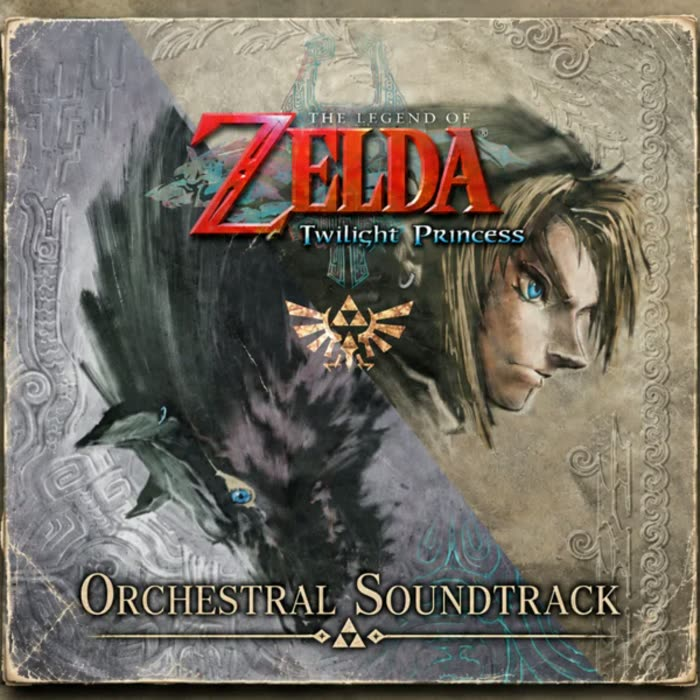
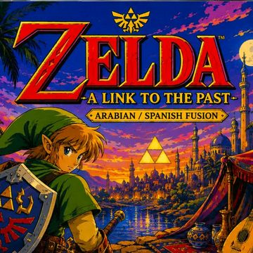
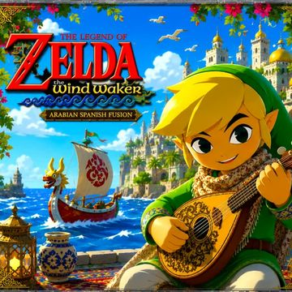
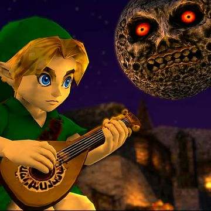
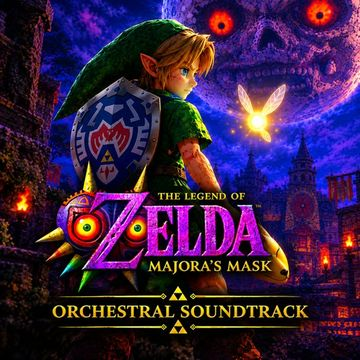
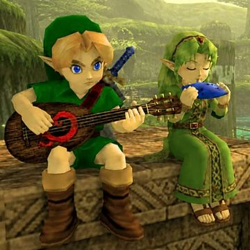

Zelda Twilight Princess - Symphony
Symphonic orchestral arrangements of the music from The Legend of Zelda: Twilight Princess, the 2006 adventure. 28 tracks with 20-second previews.
Free gift: this album includes an alternate version (bonus CD 2).
Get this album- 1Title Screen
- 2Menu Select
- 3Opening Demo
- 4Meet Ilia
- 5Ordon Village
- 6Ordon Ranch
- 7Herd Game
- 8Shop
- 9Battle Second Half
- 10Ilia's Theme
- 11Midna's Theme
- 12The Light Spirit Appears
- 13Faron Woods
- 14Hyrule Field
- 15Kakariko Saved
- 16Death Mountain
- 17Courage
- 18Save Ilia
- 19Queen Rutela's Theme (Serenade of Water)
- 20Lake Hylia
- 21Midna's Lament
- 22Sacred Grove (Lost Woods)
- 23Zora's Domain
- 24Boss Defeated
- 25The Hidden Village
- 26Malo's Mart
- 27Entering the Twilight Realm
- 28Princess Zelda's Theme
Related

The Legend of Zelda: A Link to the Past Arabian Spanish FusionArabian, 22 tracks
Zelda Wind Waker ArabianArabian, 11 tracks
Zelda Majora's Mask Arabian/SpanishArabian, 28 tracks
Zelda Majora's Mask - SymphonySymphony, 18 tracks
Zelda Ocarina of time Arabian SpanishArabian, 40 tracks Zelda Ocarina of Time - SymphonySymphony, 31 tracks
Zelda Ocarina of Time - SymphonySymphony, 31 tracks Zelda Wind Waker - SymphonySymphony, 12 tracks
Zelda Wind Waker - SymphonySymphony, 12 tracks